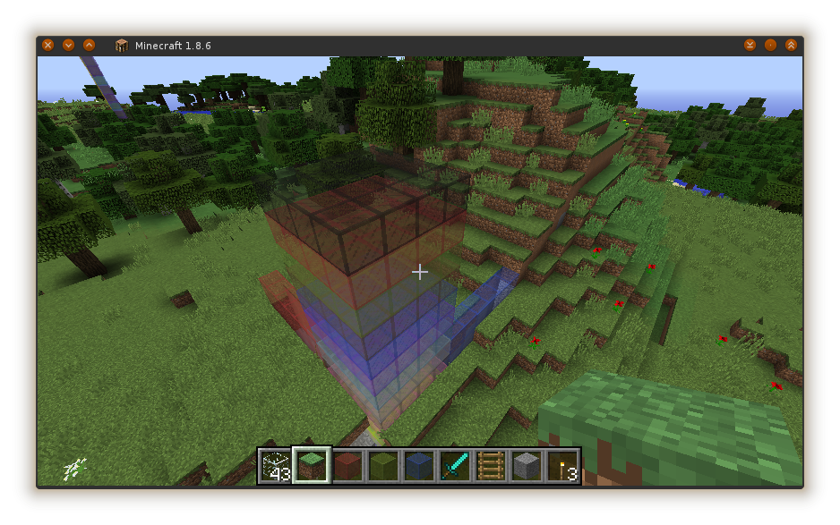

Hacking Minecraft with Python
I'm having a play with Minecraft and Python, using the mcpipy library, a Minecraft server called CannaryMod, and a plugin-in for that called RaspberryJuice.
You can do all this out-of-the-box with Raspbian on a RaspberryPi, but I wanted to set up my home computers also. Here's a quick run-down of the steps I followed.
Install the software
First you need a copy of the Minecraft game. You can get it for free, but you will need to license a Player with Mojang, which is (US)$30 per player. I share one with our eldest son. Our player name is "devilcraft74".
You'll also need CanaryMod and a plug-in for it called RaspberryJuice. The creator of RaspberryJuice, Martin O'Hanlan, has an excellent blog, and his instructions for installing all of this and setting it up are clear and easy to follow. Start there.
Finally, you'll want a copy of mcpipy which is the Python bindings and some sample code for Minecraft Pi edition. For older hackers, this is where the real fun begins.
Configure your World
CanaryMod's main purpose seems to be as a server for running Minecraft MMOGs. It has a sophisticated Permissions system and modular configuration files. After you unpack it and accept the EULA (by modifying eula.txt), you will have a tightly locked-down Minecraft server that needs some changes to be useful for hacking with Python.
The documentation is good, so far as it goes, but it seems to still be under construction. Anyway, the configuration files are well commented, so it's simple to work out what to change just by reading them.
I will configure my world for hacking with Python. I want to play in Creative Mode (so I can fly, and so that there is no interference with my hacking by the mechanics of the Survival game) and also I want to be able to build with the player as well as through Python.
First, set to Creative mode. I'm setting the default gamemode for the world from it's configuration file (a file inside the CanaryMod directory called config/worlds/default/default_NORMAL.conf):
gamemode=1
Now, whenever a player joins my server and enters the default world, they will be in Creative mode rather than Survival.
Second, grant permission to build. Once the server starts, you can enter this command at the server console (you only need to do it once):
/playermod group set devilcraft74 admins
(substitute your own player name for devilcraft74)
Yep, I am now root in the world. I realise that there is a much more surgical way to allow players to build in the world:
/groupmod permission add visitors canary.world.build
This adds canary.world.build permission to the visitors group (of which all players are members when they join the server). But this isn't working for me. I'm unsure why exactly, and I'm fairly sure I've spelt it right. I can't find what all the default permissions are to check that though (again, documentation seems unfinished). So for now at least, I'll just add my player to the admins group, which I note from the world config file has a path of '*' and I take that to mean "allow All The Things!". For hacking in my own minecraft server, which I don't intend to be a MMOG on the Internet,this is fine.
Connect and hack away!
We're ready to hack Minecraft worlds! A basic startup sequence is to launch CanaryMod, then start Minecraft and connect to localhost from the Multiplayer menu option. I'll assume you know how to play Minecraft enough to look and move around, as well as build stuff and look for Block types in your Inventory….
Once Minecraft's running and connected to your CanaryMod server, then from a Python REPL, this incantation will get Python connected as well (assuming mcpipy is in your Python library path, or is a subdirectory of the current directory when you run it):
import mcpi.minecraft as minecraft
mc = minecraft.Minecraft.create()
You will see a message in the CanaryMod console, confirming a new connection has been made:
[13:39:34] [CanaryRaspberryJuicePlugin] [INFO]: Starting input thread
[13:39:34] [CanaryRaspberryJuicePlugin] [INFO]: Starting output thread
[13:39:34] [CanaryRaspberryJuicePlugin] [INFO]: Opened connection to/127.0.0.1:41722.
Were in!
Operations on the Minecraft world are done by sending messages to the Minecraft object, an instance of which we just declared as mc.
Let's try something simple:
tintable_glass = 95
red = 14
blue = 11
mc.setBlocks(1,0,0, 16,3,0, tintable_glass,red)
mc.setBlocks(0,0,1, 0,3,16, tintable_glass,blue)
for y in range(16):
mc.setBlocks(0,y,0, 3,y,3, tintable_glass,y)
This makes a short axis out of glass blocks, starting at the world's Origin, with a red wall 4 blocks high along the X axis (W → E), a blue wall along the Z axis (N → S) , and a 4x4x16 tower of glass up the Y axis. Each layer of the tower is a different colour from 0 (white) to 15 (black).

Parts of this construction may be below the ground, because when the world is generated it has some topography, but you should be able to dig down to 0,0,0 and see all the colours of the tower. You can also dig into negative Y space, as well as move in negative X and Z dimensions.
Note that in Minecraft, not all Block types can be tinted using the 8th argument to setBlocks in this fashion, but Block 95 is one type that can be. Wool is another.
There's a list of known Block numbers in the mcpypi library (block.py), but it has gaps, one of them being 95... I found that
number by manually setting a block at 0,0,0 to Red Tinted Glass (from in-game, once my tower was built — using Stone — so that I knew where to find 0,0,0), and then learning it's number using:
print mc.getBlockWithData(0,0,0)
Similarly, I figured out that Red is 14 and Blue is 11 just by looking at my tower of colour and counting up from the bottom.
Time to explore
So, there you have it. We're all set to go exploring. Have a read of the Stuff About Code web site, it's got lots of fun looking stuff, starting with Turtle graphics and leading on to 2D and 3D primitives made from Blocks. Super stuff, I can see my kids are going to be really motivated to learn about Cartesian geometry, trigonometry and some other Math's subjects, and maybe evenprogramming!
Happy Hacking!